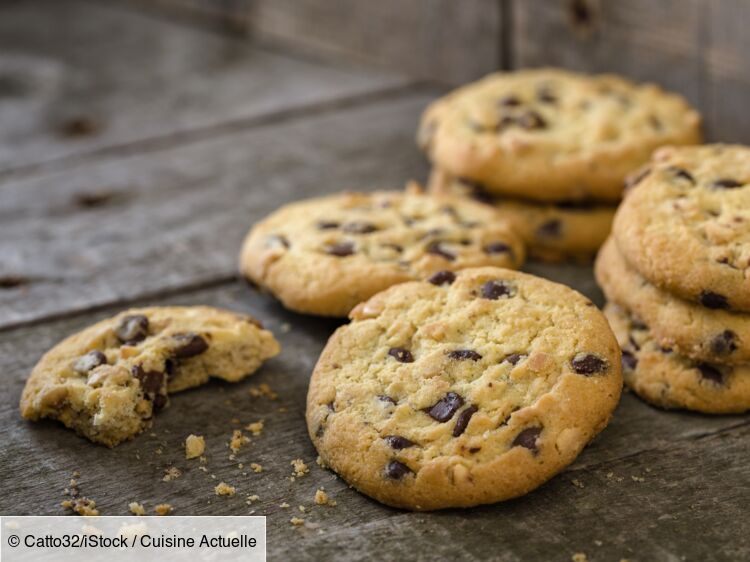

Recette de cookies
Recette pour 6 personnes

Ingredients
- 1 Oeuf
- 85g de beurre
- 150g de farine
- 100g de pépites
- 1 sachet de sucre vanillé
- 1 cuillère à café de levure chimique
- 1/2 cuillère à café de sel
Préparation
- Laisser ramollir le beurre à température ambiante.Dans un saladier, malaxez-le avec le sucre.
- Ajoutez l'oeuf et éventuellement le sucre vanillé.
- Versez progréssivement la farine, la levure chimique, le sel et les pépite de chocolat.Melangez bien
- Beurrez une plaque allant au four ou recouvrez-la d'une plaque de silicone.A l'aide de deux cuillère à soupe ou simplement avec les main, formez des noix de pâte en les espaçant car elles s'étaleront à la cuisson
- Faites cuire 8 à 10 minutes à 180° soit thermostat 6. Il faut les sortir dès que les contoure commence a bouillir.